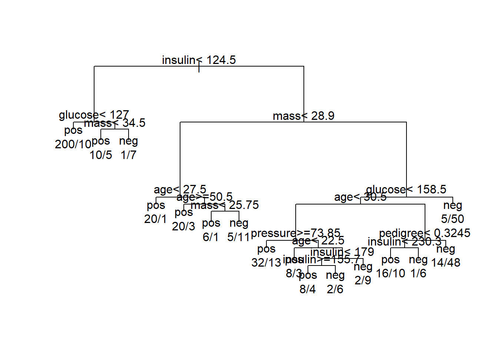
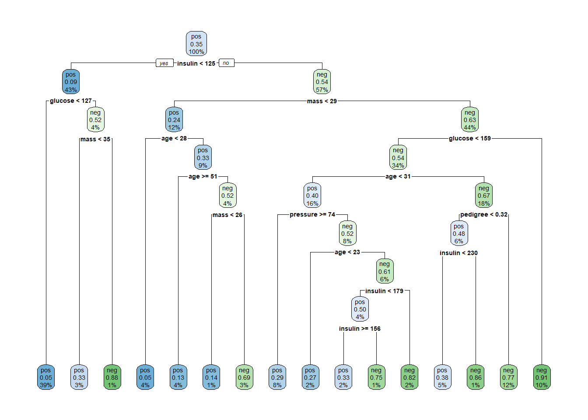

rm(list = ls())
library(rpart)
library(rpart.plot)
load(file = "datasets/pimadiabetes.rdata")
dim(pimadiabetes)
## [1] 768 9
str(pimadiabetes)
## 'data.frame': 768 obs. of 9 variables:
## $ pregnant: num 6 1 8 1 0 5 3 10 2 8 ...
## $ glucose : num 148 85 183 89 137 116 78 115 197 125 ...
## $ pressure: num 72 66 64 66 40 ...
## $ triceps : num 35 29 22.9 23 35 ...
## $ insulin : num 202.2 64.6 217.1 94 168 ...
## $ mass : num 33.6 26.6 23.3 28.1 43.1 ...
## $ pedigree: num 0.627 0.351 0.672 0.167 2.288 ...
## $ age : num 50 31 32 21 33 30 26 29 53 54 ...
## $ diabetes: Factor w/ 2 levels "pos","neg": 2 1 2 1 2 1 2 1 2 2 ...17 决策树
本文部分内容节选自随机生存森林合集
17.1 算法原理
决策树（decision tree）是一种有监督的学习方法，它通过不断的根据条件进行分支来解决分类和回归问题。
下面是一个决策树工作原理的简单示意图，通过多个条件，一层一层的判断某个西瓜是否是“好瓜”还是“坏瓜”：

决策树的结构就像一棵树，通过不断的询问是或者否来对样本进行预测。
最开始进行分支的问题被称为根节点（root node），上图中的脐部=？就是根节点。最终的结论，也就是“好瓜”、“坏瓜”是叶子节点（leaf node）或者叫终末节点（terminal node），中间的每个问题都是中间节点。
在上下两个相邻的节点中，更靠近根节点的是父节点（parent node），另一个是子节点（child node）。
对于决策树模型来说，数据中的任何一个预测变量都可以当做是其中一个中间节点，可以不断的进行分裂，这样的好处是最终每一个样本都可以得到完美的结果，也就是误差会非常小，但是这样做一个很明显的问题就是容易使模型过拟合。
根据具体的实现方式，决策树包括多种方法，比如：ID3、C4.5、CART。
本文会介绍决策树的R语言实现和超参数调优。我会介绍决策树常见的超参数以及它们的意义，超参数调优的常见方法和调优思路，比如学习曲线、网格搜索等。
17.2 准备数据和R包
演示数据为印第安人糖尿病数据集，这个数据一共有768行，9列，其中diabetes是结果变量，为二分类，其余列是预测变量。
划分训练集、测试集。训练集用于建立模型，测试集用于测试模型表现，划分比例为7:3。
# 划分是随机的，设置种子数可以让结果复现
set.seed(123)
ind <- sample(1:nrow(pimadiabetes), size = 0.7*nrow(pimadiabetes))
# 去掉真实结果列
train <- pimadiabetes[ind,]
test <- pimadiabetes[-ind,]
dim(train)
## [1] 537 9
dim(test)
## [1] 231 917.3 建立模型
首先在训练集上建立模型，先不进行任何设置，就用默认的，看看效果如何：
# 决策树计算过程中有随机性，需设置种子数保证结果能复现
set.seed(123)
treefit <- rpart(diabetes ~ ., data = train)
treefit
## n= 537
##
## node), split, n, loss, yval, (yprob)
## * denotes terminal node
##
## 1) root 537 187 pos (0.65176909 0.34823091)
## 2) insulin< 124.52 233 22 pos (0.90557940 0.09442060)
## 4) glucose< 127 210 10 pos (0.95238095 0.04761905) *
## 5) glucose>=127 23 11 neg (0.47826087 0.52173913)
## 10) mass< 34.5 15 5 pos (0.66666667 0.33333333) *
## 11) mass>=34.5 8 1 neg (0.12500000 0.87500000) *
## 3) insulin>=124.52 304 139 neg (0.45723684 0.54276316)
## 6) mass< 28.9 67 16 pos (0.76119403 0.23880597)
## 12) age< 27.5 21 1 pos (0.95238095 0.04761905) *
## 13) age>=27.5 46 15 pos (0.67391304 0.32608696)
## 26) age>=50.5 23 3 pos (0.86956522 0.13043478) *
## 27) age< 50.5 23 11 neg (0.47826087 0.52173913)
## 54) mass< 25.75 7 1 pos (0.85714286 0.14285714) *
## 55) mass>=25.75 16 5 neg (0.31250000 0.68750000) *
## 7) mass>=28.9 237 88 neg (0.37130802 0.62869198)
## 14) glucose< 158.5 182 83 neg (0.45604396 0.54395604)
## 28) age< 30.5 87 35 pos (0.59770115 0.40229885)
## 56) pressure>=73.85 45 13 pos (0.71111111 0.28888889) *
## 57) pressure< 73.85 42 20 neg (0.47619048 0.52380952)
## 114) age< 22.5 11 3 pos (0.72727273 0.27272727) *
## 115) age>=22.5 31 12 neg (0.38709677 0.61290323)
## 230) insulin< 179 20 10 pos (0.50000000 0.50000000)
## 460) insulin>=155.66 12 4 pos (0.66666667 0.33333333) *
## 461) insulin< 155.66 8 2 neg (0.25000000 0.75000000) *
## 231) insulin>=179 11 2 neg (0.18181818 0.81818182) *
## 29) age>=30.5 95 31 neg (0.32631579 0.67368421)
## 58) pedigree< 0.3245 33 16 pos (0.51515152 0.48484848)
## 116) insulin< 230.35 26 10 pos (0.61538462 0.38461538) *
## 117) insulin>=230.35 7 1 neg (0.14285714 0.85714286) *
## 59) pedigree>=0.3245 62 14 neg (0.22580645 0.77419355) *
## 15) glucose>=158.5 55 5 neg (0.09090909 0.90909091) *上面就是一颗建立好的决策树，它给出了每次分支的标准。
我们可以把结果通过图形的方式画出来，默认的画图：
par(xpd = TRUE)
plot(treefit,compress = TRUE)
text(treefit, use.n = TRUE)
并不是很美观，建立好的决策树的结果还可以通过rpart.plot函数画出来：
rpart.plot(treefit)
这样的结果一目了然，它告诉我们，第一次分支使用了insulin这个变量，分支的标准是124.5,分支后每个子节点的样本比例也很清楚的显示了。
这棵树一共分支了8次，树的深度为9层。
也可以使用partykit进行可视化：
library(partykit)
plot(as.party(treefit))
如果你还想要更加花里胡哨的可视化效果，可以试一下我们之前介绍过的treeheatR，效果绝对炫酷：超级炫酷的决策树可视化R包

17.4 超参数介绍
这是默认情况下建立好的决策树，没有进行任何的超参数调优，这样的一棵树，会自由地“生长”，直到不能再生长为止。
决策树的超参数有很多，大部分都是和剪枝有关的，通过剪枝参数，可以有效限制树的生长（防止过拟合），这几个参数也是所有和树有关的模型的通用参数，比如随机森林，常见的有：
- 树的深度：设置树分支的最大深度；
- 使用的特征个数：设置建立模型时最多使用几个特征；
- 最小分支节点：如果当前节点的样本数少于某个值就不再往下分支了。
常见的是这几个，其他还有很多，需要深入了解可以自行学习。
这些超参数都可以通过rpart.control函数设置。
通过预先设定好这些参数的值，达到防止树过度生长的目的，这种叫做预剪枝。
除此之外，rpart.control函数中提供了cp参数，可以用来实现后剪枝。
当决策树复杂度超过一定程度后，随着复杂度的提高，模型的分类准确度反而会降低。因此，建立的决策树不宜太复杂，需进行剪枝。该剪枝算法依赖于复杂度参数cp,cp随树复杂度的增加而减小，当增加一个节点引起的分类准确度变化量小于树复杂度变化的cp倍时，则须剪去该节点。故建立一棵既能精确分类，又不过度拟合的决策树的关键是求解一个合适的cp值。一般选择错判率最小值(Xerror)对应的cp值来修剪。
rpart函数默认是使用十折交叉验证进行计算，也可以通过rpart.control函数进行设置
# 这里都选择了默认值
set.seed(123)
treefit <- rpart(diabetes ~ ., data = train,
control = rpart.control(minsplit = 20, # 最小分支节点
#minbucket = 2, # 分支后最小节点
maxdepth = 30, # 树的深度
cp = 0.01, # 复杂度
xval = 10 # 交叉验证，默认10折
)
)
treefit
## n= 537
##
## node), split, n, loss, yval, (yprob)
## * denotes terminal node
##
## 1) root 537 187 pos (0.65176909 0.34823091)
## 2) insulin< 124.52 233 22 pos (0.90557940 0.09442060)
## 4) glucose< 127 210 10 pos (0.95238095 0.04761905) *
## 5) glucose>=127 23 11 neg (0.47826087 0.52173913)
## 10) mass< 34.5 15 5 pos (0.66666667 0.33333333) *
## 11) mass>=34.5 8 1 neg (0.12500000 0.87500000) *
## 3) insulin>=124.52 304 139 neg (0.45723684 0.54276316)
## 6) mass< 28.9 67 16 pos (0.76119403 0.23880597)
## 12) age< 27.5 21 1 pos (0.95238095 0.04761905) *
## 13) age>=27.5 46 15 pos (0.67391304 0.32608696)
## 26) age>=50.5 23 3 pos (0.86956522 0.13043478) *
## 27) age< 50.5 23 11 neg (0.47826087 0.52173913)
## 54) mass< 25.75 7 1 pos (0.85714286 0.14285714) *
## 55) mass>=25.75 16 5 neg (0.31250000 0.68750000) *
## 7) mass>=28.9 237 88 neg (0.37130802 0.62869198)
## 14) glucose< 158.5 182 83 neg (0.45604396 0.54395604)
## 28) age< 30.5 87 35 pos (0.59770115 0.40229885)
## 56) pressure>=73.85 45 13 pos (0.71111111 0.28888889) *
## 57) pressure< 73.85 42 20 neg (0.47619048 0.52380952)
## 114) age< 22.5 11 3 pos (0.72727273 0.27272727) *
## 115) age>=22.5 31 12 neg (0.38709677 0.61290323)
## 230) insulin< 179 20 10 pos (0.50000000 0.50000000)
## 460) insulin>=155.66 12 4 pos (0.66666667 0.33333333) *
## 461) insulin< 155.66 8 2 neg (0.25000000 0.75000000) *
## 231) insulin>=179 11 2 neg (0.18181818 0.81818182) *
## 29) age>=30.5 95 31 neg (0.32631579 0.67368421)
## 58) pedigree< 0.3245 33 16 pos (0.51515152 0.48484848)
## 116) insulin< 230.35 26 10 pos (0.61538462 0.38461538) *
## 117) insulin>=230.35 7 1 neg (0.14285714 0.85714286) *
## 59) pedigree>=0.3245 62 14 neg (0.22580645 0.77419355) *
## 15) glucose>=158.5 55 5 neg (0.09090909 0.90909091) *可以看到这棵树和我们最开始建立的模型一模一样，因为我们用了默认的设置，并没有更改。
接下来我们在测试集上看看模型表现：
pred <- predict(treefit, newdata = test,type = "class")
# 计算混淆矩阵
caret::confusionMatrix(test$diabetes, pred)
## Confusion Matrix and Statistics
##
## Reference
## Prediction pos neg
## pos 130 20
## neg 36 45
##
## Accuracy : 0.7576
## 95% CI : (0.697, 0.8114)
## No Information Rate : 0.7186
## P-Value [Acc > NIR] : 0.10561
##
## Kappa : 0.4423
##
## Mcnemar's Test P-Value : 0.04502
##
## Sensitivity : 0.7831
## Specificity : 0.6923
## Pos Pred Value : 0.8667
## Neg Pred Value : 0.5556
## Prevalence : 0.7186
## Detection Rate : 0.5628
## Detection Prevalence : 0.6494
## Balanced Accuracy : 0.7377
##
## 'Positive' Class : pos
## 混淆矩阵的结果显示准确度Accuracy : 0.6987，效果不是很好！
17.5 后剪枝
下面我们通过cp参数进行后剪枝。
首先可以通过printcp函数查看复杂度和误差之间的数值关系：
printcp(treefit)
##
## Classification tree:
## rpart(formula = diabetes ~ ., data = train, control = rpart.control(minsplit = 20,
## maxdepth = 30, cp = 0.01, xval = 10))
##
## Variables actually used in tree construction:
## [1] age glucose insulin mass pedigree pressure
##
## Root node error: 187/537 = 0.34823
##
## n= 537
##
## CP nsplit rel error xerror xstd
## 1 0.163102 0 1.00000 1.00000 0.059037
## 2 0.045455 2 0.67380 0.82353 0.056044
## 3 0.018717 4 0.58289 0.71658 0.053626
## 4 0.016043 6 0.54545 0.66310 0.052222
## 5 0.010695 10 0.48128 0.67380 0.052514
## 6 0.010000 15 0.42781 0.66845 0.052369CP是复杂度参数，nsplit是分裂次数，rel error是相对误差，即某次分裂的RSS(残差平方和)除以不分裂的RSS，xerror是平均误差，xstd是交叉验证的标准差
从上面的结果可以看出，CP=0.016043时，分裂次数为6，平均误差和标准差最小，分别是0.66310和0.052222。
下面用图形化的方式展示结果：
plotcp(treefit)
纵坐标是相对误差，底下的横坐标是复杂度，上面的横坐标是树的规模，上面可以看出树的规模为7(也就是分裂6次)时，相对误差最小，和上面printcp()结果相同。
接下来就可以就可以根据CP进行剪枝了，通常选择xerror最小时的CP值(还有别的选择方法，比如1倍标准差法等)：
cp <- treefit$cptable[which.min(treefit$cptable[,"xerror"]), "CP"]
cp
## [1] 0.01604278
treepruned <- prune(treefit, cp = cp)
treepruned
## n= 537
##
## node), split, n, loss, yval, (yprob)
## * denotes terminal node
##
## 1) root 537 187 pos (0.65176909 0.34823091)
## 2) insulin< 124.52 233 22 pos (0.90557940 0.09442060) *
## 3) insulin>=124.52 304 139 neg (0.45723684 0.54276316)
## 6) mass< 28.9 67 16 pos (0.76119403 0.23880597) *
## 7) mass>=28.9 237 88 neg (0.37130802 0.62869198)
## 14) glucose< 158.5 182 83 neg (0.45604396 0.54395604)
## 28) age< 30.5 87 35 pos (0.59770115 0.40229885)
## 56) pressure>=73.85 45 13 pos (0.71111111 0.28888889) *
## 57) pressure< 73.85 42 20 neg (0.47619048 0.52380952)
## 114) age< 22.5 11 3 pos (0.72727273 0.27272727) *
## 115) age>=22.5 31 12 neg (0.38709677 0.61290323) *
## 29) age>=30.5 95 31 neg (0.32631579 0.67368421) *
## 15) glucose>=158.5 55 5 neg (0.09090909 0.90909091) *剪枝后的树简单多了，画图展示剪枝后的树：
rpart.plot(treepruned)
接下来使用修剪后的树再次作用于测试集：
pred2 <- predict(treepruned, newdata = test, type = "class")
caret::confusionMatrix(test$diabetes, pred2)
## Confusion Matrix and Statistics
##
## Reference
## Prediction pos neg
## pos 120 30
## neg 26 55
##
## Accuracy : 0.7576
## 95% CI : (0.697, 0.8114)
## No Information Rate : 0.632
## P-Value [Acc > NIR] : 3.133e-05
##
## Kappa : 0.4736
##
## Mcnemar's Test P-Value : 0.6885
##
## Sensitivity : 0.8219
## Specificity : 0.6471
## Pos Pred Value : 0.8000
## Neg Pred Value : 0.6790
## Prevalence : 0.6320
## Detection Rate : 0.5195
## Detection Prevalence : 0.6494
## Balanced Accuracy : 0.7345
##
## 'Positive' Class : pos
## 通过后剪枝的准确度和不剪枝的结果差不多，但是由于分裂次数明显减少，模型复杂度明显减小了。
这是非常常见的情况，有时候你调优后的模型可能还不如默认的好，有时候却效果超群，原因是多方面的，首先是数据问题，其次是选择的方法。
17.6 学习曲线
接下来我们看看通过预剪枝能不能让模型的表现更好一点。
如果要对单个超参数进行调优，我们可以用学习曲线的方式，学习曲线的横坐标是超参数的各个取值，纵坐标是不同超参数下的模型表现，通过学习曲线，可以找到模型表现较好的超参数值。
我们就以调整minsplit为例。
minsplit是每个节点的最少样本量，我们训练集一共有537个样本，就设置为2:300先看看情况。
模型的评价指标选择准确率。
res <- list()
for(i in 2:300){
f <- rpart(diabetes ~ ., data = train,
control = rpart.control(minsplit = i )
)
pred <- predict(f, newdata = test,type = "class")
acc <- caret::confusionMatrix(test$diabetes, pred)[["overall"]][["Accuracy"]]
df <- data.frame(minsplit = i, accuracy = acc)
res[[i-1]] <- df
}
acc.res <- do.call(rbind, res)查看准确率的范围：
range(acc.res$accuracy)
## [1] 0.6969697 0.7878788准确率最高是0.7878788，接下来我们把结果画出来：
library(ggplot2)
ggplot(acc.res, aes(minsplit, accuracy))+
geom_point()+
geom_line()+
geom_vline(xintercept = 13,linetype = 2, color = "red")+
theme_bw()
这个图就是minsplit的学习曲线，从这个学习曲线可以看出，minsplit=13的时候，准确度accuracy达到了最大。
我们可以轻松找出准确度最高的minsplit值（可能有多个minsplit都对应着最高的准确率，但是我们肯定是优先选择最简单的一个）：
acc.res[which.max(acc.res$accuracy),]
## minsplit accuracy
## 12 13 0.7878788minsplit为13时，准确度就已经到最高了。这个结果比后剪枝的结果好一点。
所以我们就选择minsplit为13，重新建立决策树模型。
# 建立模型
set.seed(123)
treef <- rpart(diabetes ~ ., data = train,
control = rpart.control(minsplit = 13) # 这里选择13
)
# 测试集查看效果
pred <- predict(treef, newdata = test,type = "class")
# 测试集的混淆矩阵
caret::confusionMatrix(test$diabetes, pred)
## Confusion Matrix and Statistics
##
## Reference
## Prediction pos neg
## pos 126 24
## neg 25 56
##
## Accuracy : 0.7879
## 95% CI : (0.7295, 0.8388)
## No Information Rate : 0.6537
## P-Value [Acc > NIR] : 5.953e-06
##
## Kappa : 0.5329
##
## Mcnemar's Test P-Value : 1
##
## Sensitivity : 0.8344
## Specificity : 0.7000
## Pos Pred Value : 0.8400
## Neg Pred Value : 0.6914
## Prevalence : 0.6537
## Detection Rate : 0.5455
## Detection Prevalence : 0.6494
## Balanced Accuracy : 0.7672
##
## 'Positive' Class : pos
## 决策树的可视化：
rpart.plot(treef)
17.7 网格搜索
学习曲线适合于某个单独的超参数调优，如果是多个超参数一起调优还是要使用其他方法，最常见的一种就是网格搜索，网格搜索现在我们有非常成熟的工具包，比如tidymodels、mlr3、caret。
但是今天我想介绍下使用e1071包实现网格搜索，这个包功能强大，不仅可以实现支持向量机，而且包含多种调优功能，详情请参考：R语言支持向量机e1071
library(e1071)
# 默认10折交叉验证
set.seed(456)
tune_obj <- tune.rpart(diabetes ~ ., data = train,
minsplit = seq(10,120,5),
cp = c(0.0001,0.001,0.01,0.1,1)
)
tune_obj
##
## Parameter tuning of 'rpart.wrapper':
##
## - sampling method: 10-fold cross validation
##
## - best parameters:
## minsplit cp
## 100 1e-04
##
## - best performance: 0.2269392速度很快，使用也很简单。直接给出最优结果是minsplit=100，cp=0.0001。
重新拟合模型：
rpart_fit <- rpart(diabetes ~ ., data = train,
control = rpart.control(minsplit = 100,
cp = 0.0001,
xval = 10
)
)
rpart_fit
## n= 537
##
## node), split, n, loss, yval, (yprob)
## * denotes terminal node
##
## 1) root 537 187 pos (0.65176909 0.34823091)
## 2) insulin< 124.52 233 22 pos (0.90557940 0.09442060) *
## 3) insulin>=124.52 304 139 neg (0.45723684 0.54276316)
## 6) mass< 28.9 67 16 pos (0.76119403 0.23880597) *
## 7) mass>=28.9 237 88 neg (0.37130802 0.62869198)
## 14) glucose< 158.5 182 83 neg (0.45604396 0.54395604)
## 28) age< 30.5 87 35 pos (0.59770115 0.40229885) *
## 29) age>=30.5 95 31 neg (0.32631579 0.67368421) *
## 15) glucose>=158.5 55 5 neg (0.09090909 0.90909091) *这棵树就简单多了，效果也不错。
接下来我们在测试集上看看模型表现：
pred <- predict(rpart_fit, newdata = test,type = "class")
# 计算混淆矩阵
caret::confusionMatrix(test$diabetes, pred)
## Confusion Matrix and Statistics
##
## Reference
## Prediction pos neg
## pos 128 22
## neg 32 49
##
## Accuracy : 0.7662
## 95% CI : (0.7063, 0.8192)
## No Information Rate : 0.6926
## P-Value [Acc > NIR] : 0.00816
##
## Kappa : 0.4717
##
## Mcnemar's Test P-Value : 0.22067
##
## Sensitivity : 0.8000
## Specificity : 0.6901
## Pos Pred Value : 0.8533
## Neg Pred Value : 0.6049
## Prevalence : 0.6926
## Detection Rate : 0.5541
## Detection Prevalence : 0.6494
## Balanced Accuracy : 0.7451
##
## 'Positive' Class : pos
## 混淆矩阵的结果显示准确度Accuracy : 0.7662 ，效果还可以哦！